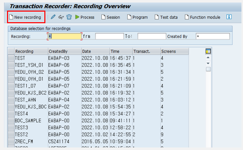

20221213 - BDC
What is the BDC?
Batch Data Communication
Standard Process를 대량으로 처리하여 많은 Master 성 데이터를 생성/변경/삭제 할 때 주로 사용
BDC는 Transaction 단위로 실행되며, Transaction의 작업과 동일한 순서로 실제 입력 작업과 동일한 처리 효과
즉, BDC probram이라 하면 입력 화면을 이용하여 반복 수행하는 작업을 한 번에 처리할 때 사용
BDC Purpose
시스템을 운영하다 보면 대량의 데이터를 제어하거나 Standard table의 데이터에 관여해야 할 필요가 생길 때, SAP는 직접 테이블의 데이터를 변겨하기 보다는 데이터를 기반으로 business process를 transaction 형태로 발생하도록 설계
이에, standard process를 대량으로 처리하여 기초 데이터 생성이나 변경 같은 작업에서 자주 사용되는 기술
BDC FLOW
- transaction recording
- BDC source 생성
- DATA SELECT 작성 (OR 데이터 파일 업로드)
- BDC 실행
Transaction recording
T-code: SHDB
BDC 프로그램을 작성하기 전에 먼저 어떤 transaction을 수행하는 지의 이정표를 작성 한 후 작성한 지도를 BDC program에 작성하여 대량의 데이터를 올바르게 흐를 수 있게 해주기 위한 하나의 load MAP



Program - recording 대상 프로그램 ID
Screen - 해당 프로그램의 스크린 번호
Start ID - 새로운 스크린의 시작 표시
Field Name - 이벤트가 일어나는 필드 명
- BDC_CURSOR - 해당 화면을 떠나기 전 커서의 위치
- BDC_OKCODE - 사용자가 화면의 버튼, 엔터키 등을 눌렀을 때 발생하는 이벤트를 기록한 값
Field Value - 이벤트가 일어나느 필드의 입력 값
BDC Source 생성
BDCDATA Structure와 동일한 구조의 ITAB을 DATA에 담아 BDC 처리

MAIN PROGRAM

TOP

SCREEN

BDC PROGRAM


CALL TRANSACTION 생성
USING BDC_ITAB - INTERNAL TABLE을 이용하여 TRANSACTION 호출
BDC MODE - BDC 실행모드
- A - 화면에 표시
- E - 에러가 발생하는 경우에만 화면 표시
- N - 표시 안함
UPDATE - UPDATE MODE
- A - 비동기
- S - 동기
MESSAGE - TRANSACTION 실행 중의 모든 시스템 메세지를 담는 메세지 (ITAB)
실행

IN-CLASS PRACTICE
*&---------------------------------------------------------------------*
*& Report ZEDUR001_BDC
*&---------------------------------------------------------------------*
*&
*&---------------------------------------------------------------------*
REPORT ZEDUR001_BDC.
INCLUDE ZEDUR001_BDC_TOP.
INCLUDE ZEDUR001_BDC_SCR.
INCLUDE ZEDUR001_BDC_F01.
START-OF-SELECTION.
PERFORM SELECT_DATA.
PERFORM BDC_DATA.*&---------------------------------------------------------------------*
*& Include ZEDUR001_BDC_TOP
*&---------------------------------------------------------------------*
TABLES: ZSTU_15.
DATA: BEGIN OF GS_STUDENT.
INCLUDE TYPE ZSTU_15.
DATA: END OF GS_STUDENT.
DATA: GT_STUDENT LIKE TABLE OF GS_STUDENT.
DATA: BEGIN OF GS_BDC.
INCLUDE STRUCTURE BDCDATA.
DATA: END OF GS_BDC.
DATA: GT_BDC LIKE TABLE OF GS_BDC.
DATA: BEGIN OF GT_MESSTAB OCCURS 0.
INCLUDE STRUCTURE BDCMSGCOLL.
DATA: END OF GT_MESSTAB.*&---------------------------------------------------------------------*
*& Include ZEDUR001_BDC_SCR
*&---------------------------------------------------------------------*
SELECT-OPTIONS: S_ZCODE FOR ZSTU_15-ZCODE.
PARAMETERS: P_MODE(1) TYPE C DEFAULT 'N'.*&---------------------------------------------------------------------*
*& Include ZEDUR001_BDC_F01
*&---------------------------------------------------------------------*
FORM BDC_DATA.
LOOP AT GT_STUDENT INTO GS_STUDENT.
CLEAR: GS_BDC.
GS_BDC-PROGRAM = 'SAPLSUID_MAINTENANCE'.
GS_BDC-DYNPRO = '1050'.
GS_BDC-DYNBEGIN = 'X'.
APPEND GS_BDC TO GT_BDC.
CLEAR: GS_BDC.
GS_BDC-FNAM = 'BDC_OKCODE'.
GS_BDC-FVAL = '=CHAN'.
APPEND GS_BDC TO GT_BDC.
CLEAR: GS_BDC.
GS_BDC-FNAM = 'SUID_ST_BNAME-BNAME'.
GS_BDC-FVAL = GS_STUDENT-ZCODE.
APPEND GS_BDC TO GT_BDC.
CLEAR: GS_BDC.
GS_BDC-PROGRAM = 'SAPLSUID_MAINTENANCE'.
GS_BDC-DYNPRO = '1100'.
GS_BDC-DYNBEGIN = 'X'.
APPEND GS_BDC TO GT_BDC.
CLEAR: GS_BDC.
GS_BDC-FNAM = 'BDC_OKCODE'.
GS_BDC-FVAL = '=UPD'.
APPEND GS_BDC TO GT_BDC.
CLEAR: GS_BDC.
GS_BDC-FNAM = 'SUID_ST_NODE_PERSON_NAME-NAME_LAST'.
GS_BDC-FVAL = GS_STUDENT-ZKNAME.
APPEND GS_BDC TO GT_BDC.
ENDLOOP.
ENDFORM.
*&---------------------------------------------------------------------*
*& Form SELECT_DATA
*&---------------------------------------------------------------------*
* text
*----------------------------------------------------------------------*
* --> p1 text
* <-- p2 text
*----------------------------------------------------------------------*
FORM SELECT_DATA .
SELECT * FROM ZSTU_15 INTO CORRESPONDING FIELDS OF TABLE GT_STUDENT.
ENDFORM.